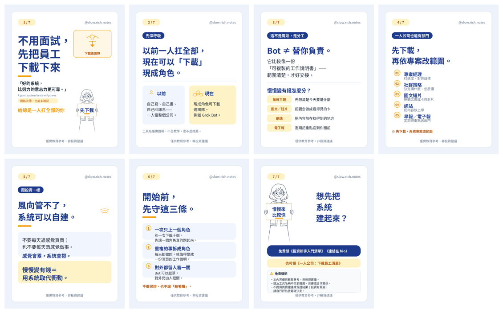

一人做內容的時候，常常是自己寫、自己畫、自己回訊息，忙到沒有餘力看錢怎麼走。後來才發現，缺的不一定是再找一個人進來，而是把重複的工作先寫成可以交出去的步驟。
有些工具能把現成的角色放進工作流程，例如可下載的 Bot（這只是工具的名字，不是教學，也不是推薦）。它不會替你承擔結果，比較像一份可以複製的工作說明書：範圍寫清楚，它就照範圍做；範圍沒寫，它只能猜。
一人公司也可以先列出幾個位子。誰決定這週先做什麼，誰看社群上的留言，誰準備圖文和短片，誰顧網站，誰把早報或電子報整理成固定格式。位子先列出來，再決定哪一段交給工具，哪一段仍要自己看過才送出。下載之後，還要依每個專案改範圍，不是按一下就結束。
這件事跟理財很像。市場的風向不是個人控得了的，自己的流程可以先建好。投資若每天憑感覺下單，心情會被漲跌帶走；工作若每天憑感覺開工，時間也會被訊息切碎。慢慢變有錢，是用可以重複的步驟，取代一時的衝動。
想先把投資的第一步寫成清單，可以免費領《投資新手入門清單》。若你在意的是一人公司怎麼分工，也可以看《一人公司：下載員工清單》。兩份都是教育整理，提到工具不代表合作或推薦。
⚠️ 僅供教育參考，非投資建議。文中若有數字，皆為假設例子，請依自己的狀況調整。投資有風險，請自行評估。